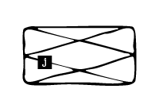
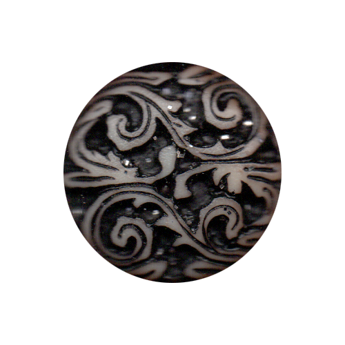

<!DOCTYPE html>
<html lang="kr"></html>
<head>
  <meta charset="UTF-8">
  <meta http-equiv="X-UA-compitable" content="IE-edge">
  <meta name="viewport" content="width=device-width", initial-scale="1.0">
  <title>j</title>
  <link href="j.css" rel="stylesheet">
  <script type="text/javascript">
    document.oncontextmenu = function(){return false;}
    function redirectToRandomPage() { 
            // Array of specific pages on the website 
            const pages = [ 
                'index.html', 
                'index8.html', 
                'index15.html', 
                'index22.html' 
            ]; 
            // Generate a random index 
            const randomIndex = Math.floor(Math.random() * pages.length); 
            // Redirect to the randomly selected page 
            window.location.href = pages[randomIndex]; 
    }
  </script>
</head>
<body oncontextmenu="return false" onselectstart="return false" ondragstart="return false" onkeydown="return false">
  <div class="box-container">
      <div class="box-item1">
        <div class="map">
          <a onclick="redirectToRandomPage()">
            
          </a>
          <p>실과 철사</p>
          <div class="comment">
            <p>공예적, 여성적이라고 여겨지는 실, 그리고 기계를 나타내는 금속. 실로 회로를 만들고, 철사로 패턴을 뜨개질하여 아이러니적 효과를 내었다.</p>
          </div>
      </div>
    </div>
    <div class="box-item2">
      
    </div>
    <div class="box-item3">
      <a href="c.html">
        </a>
        <span class="text1">c. 민첩하고<br>가느다란 손가락</span>
      <a href="k.html">
        </a>
        <span class="text2">k. 사이보그적<br>존재들의<br>실뜨기 놀이</span>
      <a href="p.html">
        </a>
        <span class="text3">p. 제텔카스텐</span>
      </div>
    </div>
  </div>
</body>